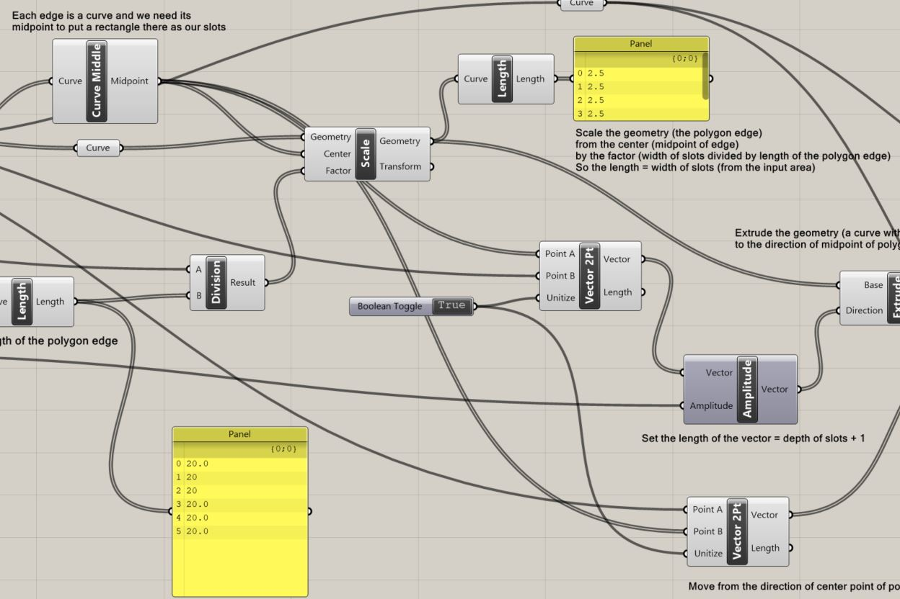
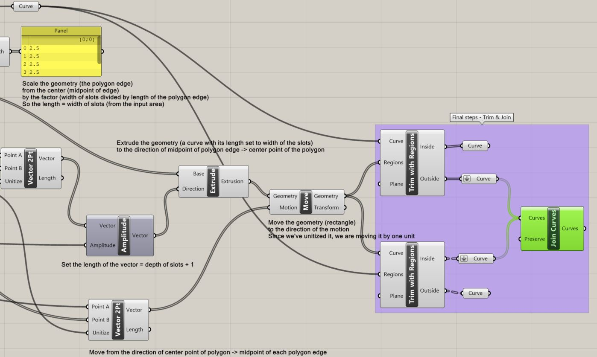
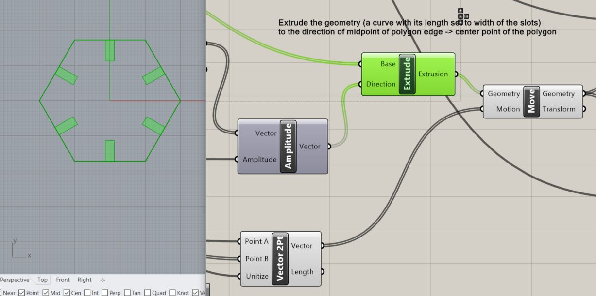
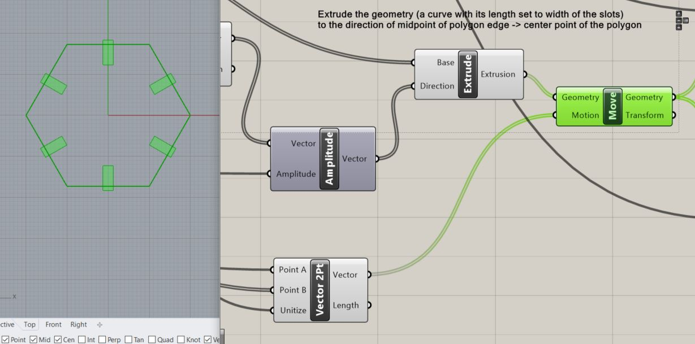
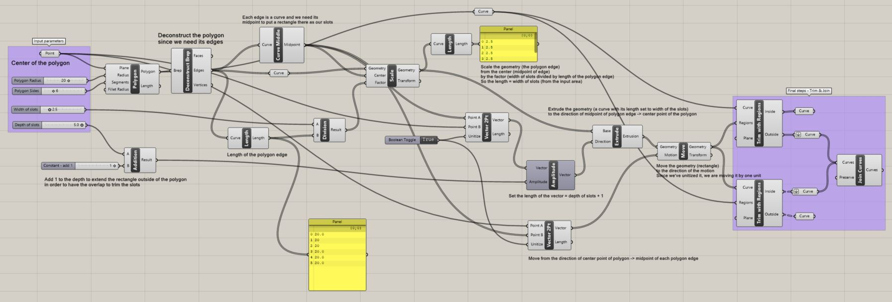
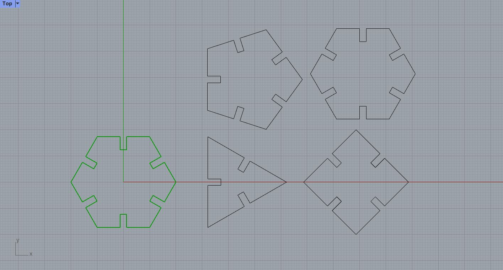

Photo by Tool., Inc on Unsplash
I'll update the final result here after I finish the laser cutting part!
Diving into Grasshopper
Since I have some experiences of using 3D modeling softwares like blender, and game engines like Unity, I find the concepts of using Grasshopper easier to understand. Having prior understandings of basic 3D concepts like geometry, faces/edges/vertices, transform, vector direction, unitize and more helped me understand the Grasshopper logic quicker.
For this week, I've been really busy with work, so my goal this week is to just finish the demo video uploaded by the TA and quickly get the idea of how Grasshopper works. I'll try to explain the process below.
The Process
*Note: The screenshots may not be the easiest way to read the process. You can refer to the Grasshopper file below for the complete program and notes.
 Step 1 to step 3-1
Step 1 to step 3-1
Step 1: Determine the input. As seen here, the input parameters are the center of the polygon, polygon radius, polygon sides, width and depth of the slots.
Step 2: Create a polygon and deconstruct it into faces/edges/vertices with "Deconstruct Brep" component. (We only need the deconstructed edges.)
Step 3: Use the midpoint of each of the polygon edges to create one side of the rectangle (its width) that'll serve as our slots.
 Step 3-1 to step 3-2Step 3-1: Use the "Curve Middle" component to find the midpoints of the deconstructed polygon edges.
Step 3-2: "Scale" the geometry (i.e. the deconstructed polygon edges) from the center (i.e. midpoint of each polygon edge) by the factor (i.e. width of slots divided by the length of the polygon edge). Therefore the length of the scaled curve is equal to the width of the slots (set and adjustable in the input area).
 Step 4 to step 6Step 4: "Extrude" the geometry (the scaled curve with its length set to the width of the slots) with the specified direciton and length. The input for the "Extrude" components are "Base" and "Direction". The Base is the scaled curve, and the Direction is a vector that has been set with a length that equals the depth of the slots + one unit (in order for us to move the rectangles outwards by one unit and do the trim later), and the direction from the midpoint of the polygon edges to the center point of the polygon. This allows us to get the rectangle slots like below.
Step 5: "Move" the geometry (rectangle slots) by the motion in order to have an overlap between the rectangle slots and the polygon to do the trim. The Motion input is defined by the "Vector 2pt" component, with a direction from the center point of the polygon to the midpoint of each of the polygon edge, and the vector length has been unitized so we are moving the geometry by one unit. See below for the result after moving the slots.
Step 6: Trim and join! Remember to "Trim with Regions" and not "Trim with Region".

Final Grasshopper Program
Here is a screen capture of my final Grasshopper program. You can find my Grasshopper and Rhino file below.
With the Grasshopper program, I can easily change the parameters and quickly create different shapes with editable slot sizes in Rhino.
Attachment
The Rhino source file can be found here.
And the Grasshopper file here.
Acknowledgements
Thank you to the TA for the helpful comments and the demo video, they helped a lot!